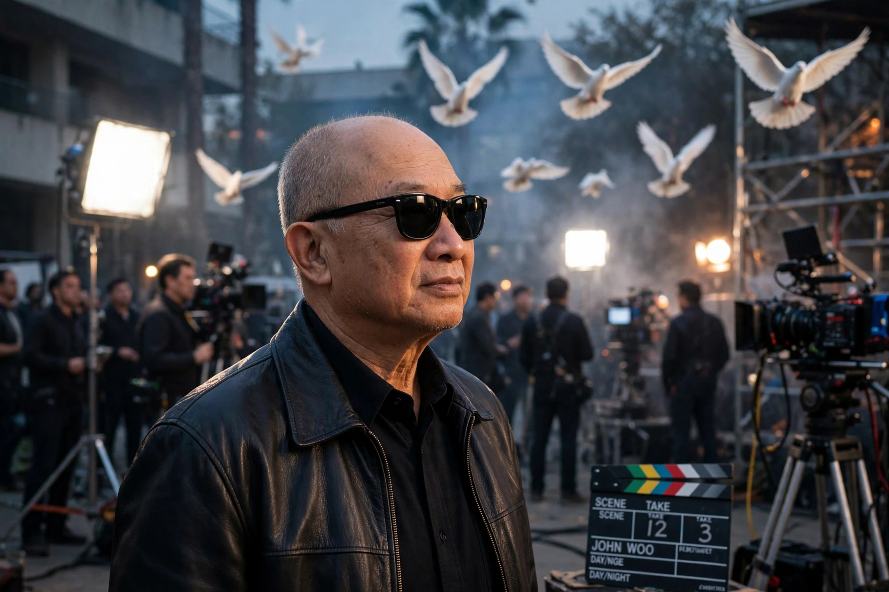

Hong Kong filmmaker (born 1946)
| John Woo | |
|---|---|
 Woo, master of the "heroic bloodshed" genre | |
| Born | Wu Yu-seng, 22 September 1946, Guangzhou, China |
| Occupation | Film director, screenwriter, producer |
| Years active | 1968–present |
| Notable work | A Better Tomorrow, The Killer, Hard Boiled, Face/Off |
John Woo Yu-seng (born 22 September 1946) is a Hong Kong film director known as a major influence on the action genre, particularly for his "heroic bloodshed" films and his signature use of stylised gunplay — "gun fu" — slow motion, and white doves. His work reshaped action cinema in both Asia and Hollywood.
Woo was born in Guangzhou and raised in poverty in Hong Kong's Shek Kip Mei slums after his family fled mainland China. He worked as an assistant director at Shaw Brothers before directing comedies and martial arts films in the 1970s, including early work with Jackie Chan.
His breakthrough, A Better Tomorrow (1986) with Chow Yun-fat, defined the heroic bloodshed genre: operatic stories of loyalty and honour among gangsters and policemen, choreographed with balletic, two-handed gun battles. The Killer (1989) and Hard Boiled (1992) — the latter famous for its single-take hospital shootout — achieved international cult status.
Woo moved to Hollywood in the 1990s, directing Hard Target (1993), Broken Arrow (1996), and the critically acclaimed Face/Off (1997) with John Travolta and Nicolas Cage, followed by Mission: Impossible 2 (2000), then the highest-grossing film of its year. Returning to China, he directed the historical epic Red Cliff (2008–2009), one of the most successful Asian films ever made. Later works include The Crossing (2014), Manhunt (2017), and the American film Silent Night (2023).
Woo's trademarks include Mexican standoffs, protagonists leaping sideways while firing two pistols, slow-motion doves crossing the frame, and a humanist emphasis on honour and redemption, influenced by his Christian faith and by directors such as Jean-Pierre Melville and Akira Kurosawa.